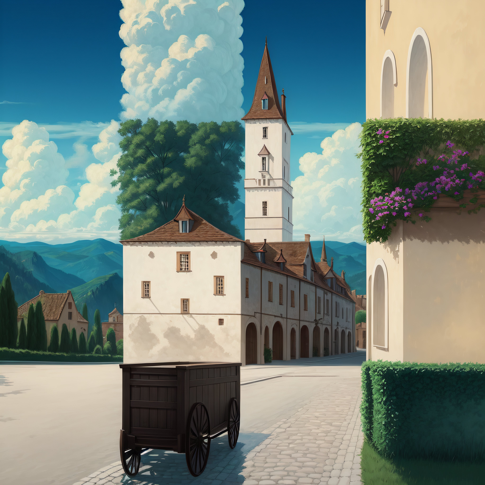

**Project Proposal**
Student Name/-s: Zehang Qiu, Yuhang Qiu
# Motivational Image
_Include and describe your motivational image, how it conforms to this year's
theme and how the selected features will help to achieve that_

The motivational image we have chosen is a creation generated by Stable Diffusion+ControlNet.
This image, crafted by the Twitter user MrUgleh in September, features a distinct checkerboard
pattern. Despite the initial appearance of weirdness, upon closer examination, each square
reveals a sense of order and coincidence.
The selected features contribute to achieving the desired image through their specific
functionalities:
*Disney BRDF*
- Enables the use of a physically-based material model, enhancing the accuracy of simulating various surface reflections and improving overall realism.
*Imagine Textures*
- Enhances image realism by adding detail and complexity to the model surfaces through the application of textures. Like textures on the building, road or wooden cart.
*Bump Mapping*
- Primarily for rendering a more realistic surface of objects like walls and roads, improve the realistic viewing of the textures.
*Heterogeneous Participating Media*
- Primarily for rendering the clouds
*Rendering on the Euler Cluster*
- Utilizes the computational power of the Euler Cluster for efficient and high-performance rendering, enabling the handling of complex scenes.
*Model Your Own Mesh*
- to align the 3D model with the desired checkerboard pattern.
*Simple Emitter*
- Primarily to create sunlight projections. As suggested by TA, we are switching to implementing distant light.
*Environment Map Emitter*
- Primarily used for rendering the sky background.
*Object Instancing*
- for generating grass and trees.
*Realistic Camera Model*
- Enhances image composition and accuracy, may consider foreground and background elements, as well as focal length adjustments.
*Mip-Mapping*
- Improves texture mapping efficiency and quality by implementing mipmapping, ensuring optimal representation of textures at various distances.
*Intel's Open Image Denoise*
- noise reduction, resulting in cleaner and more visually appealing final images.
Since the images we need to showcase may require specific angles, we plan to follow a similar approach to the 2022 project winner.
We will construct the scene in Blender and then export it to nori for rendering using the plugin described at
https://github.com/wjakob/nori/blob/master/ext/plugin/readme.md.
# Selected Features
## Student #1
Student Name: Zehang Qiu
nethz: zehqiu
ID | Short Name |Points | Features (if required) & Comments
--------|-----------------------------------|-------|----------------------------------
5.3 | Images as Textures | 5 | -
5.8 | Bump Mapping | 5 | walls and roads
5.19 | Rendering on the Euler Cluster | 5 | -
15.5 | Disney BSDF | 15 | roughness, metallic, specular, sheen, clearcoat
30.1 | Heterogeneous Participating Media | 30 | clouds, path tracing integrator
Total || 60 |
_Describe how you plan to validate them and, if needed, provide some additional information here_
Validation: compare our rendering results with the rendering results of pbrt v3 or Mitsuba as reference.
Plugin might be useful: https://github.com/mitsuba-renderer/mitsuba-blender
## Student #2
Student Name: Yuhang Qiu
nethz: yuhqiu
ID | Short Name |Points | Features (if required) & Comments
--------|-------------------------------------------|-------|----------------------------------
5.7 | Intel's Open Image Denoise integration | 5 | -
5.10 | Simple Extra emitters | 5 | distant emitter
5.17 | Object Instancing | 5 | grass and trees
5.20 | Modeling Meshes (counts only once) | 5 | -
10.10 | Mip-mapping for Textures | 10 | -
15.3 | Environment Map Emitter | 15 | sky background
15.8 | Realistic Camera Model | 15 | primarily for depth of field, lens distortion
Total || 60 |
_Describe how you plan to validate them and, if needed, provide some additional information here_
Validation: compare our rendering results with the rendering results of pbrt v3 or Mitsuba as reference.
# Supplementary
* This report template uses [Markdeep](https://casual-effects.com/markdeep/), which supports Markdown syntax in HTML file. For example usage, please refer to the [official demo document](https://casual-effects.com/markdeep/features.md.html).
* LaTeX is also supported for typing mathematical formulas:
$$
L_o(\mathbf{x}, \omega_o) = \int_{\Omega} L_i(\mathbf{x},\omega_i)\, f(\mathbf{x}, \omega_i, \omega_o)\, |\cos\theta_i|\, \mathrm{d}\omega_i
$$